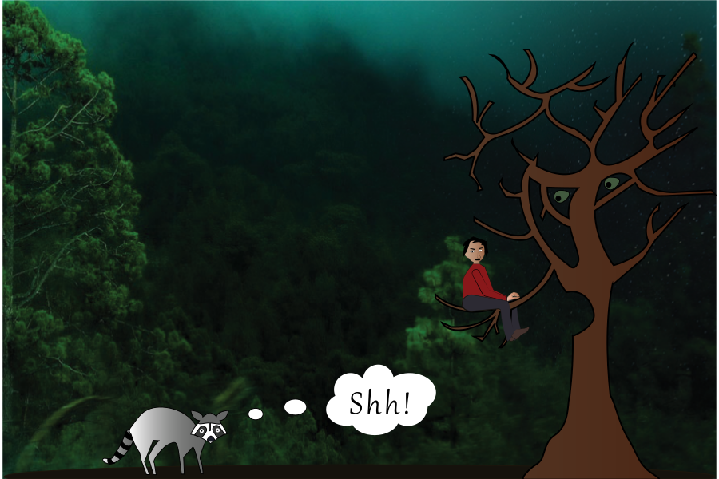

Introduction | Photoshop | Illustrator | Time Base Media | InDesign | Contact
It was a big challenge for me to understand the pen tool. To begin with, I got in a complete tangle, but by the end of the module, I had got the hang of working with segments and anchor points, and I would love to work more with illustrator, perhaps working with a drawing tablet to make my drawings more fluid. My final project shows a boy sitting on a tree branch, having a conversation. Since the next module would be Animation, I was thinking about bringing the boy, and the tree to life. The racoon is a bystander, telling the viewer to not disturb the scene.